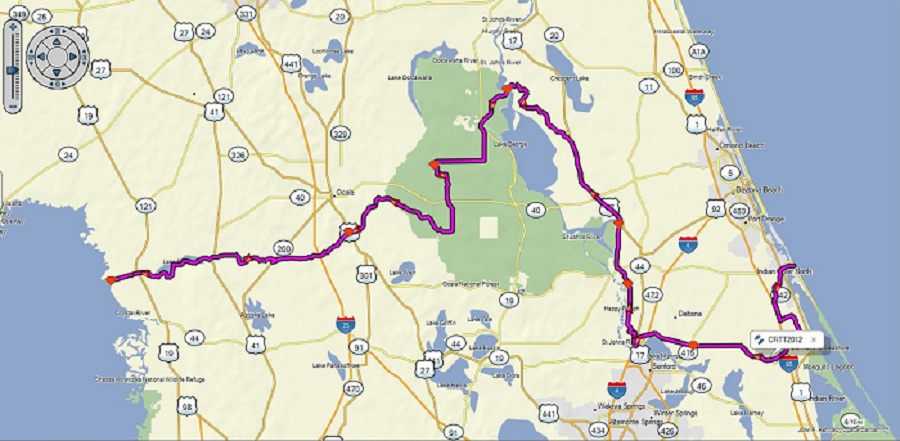
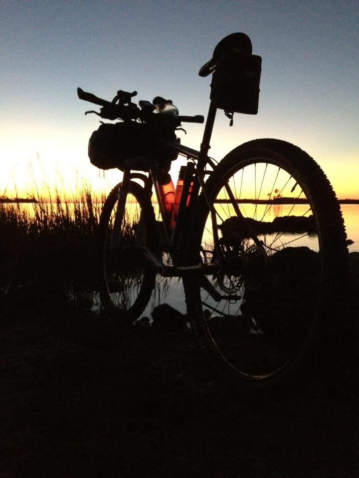

Every October/November there is a race across Florida. The course evolves each year, but has always been between 170 and 250 miles, including as much dirt roads and singletrack trails as feasible. The format is Individual Time Trial, meaning no prearranged outside support. The only provisions allowed are what the rider carries or buys at businesses along the route. There is also no stashing or dropping gear. This year’s route was the longest ever at an advertised 240 miles. At the end, including the ride from the finish line to my car, I logged 258 miles.
These data files can be loaded into a GPS unit for navigation, or to see the data the data on a map, copy and paste the URL into the search box at www.google.com/maps.
On Friday, Paul and I carpooled to Inglis, Florida with Steven, a fun travelling partner with lots of great stories to share. There we met Donnie who was to shuttle the three of us and Cabe and Kevin. Everyone was on time. We left our cars at a parking lot close to the finish line, loaded up the bikes, and were off to the Best Western in New Smyrna Beach. Kevin and Steven are both Tour Divide Finishers. The time in the truck passed quickly as we learned about their experiences last summer.
The staff at the Best Western was very friendly and was quite welcome to this crowd of folks pushing bikes through the lobby. The room was a huge suite with plenty of room for the bikes. I felt kind of sad that I arrived at dark and would be leaving before sunrise. It would have been a nice place for a lazy beach vacation. Oh well, maybe I can bike tour up that way sometime.
A big group of riders met at The Breakers for dinner. I managed to find a surf shop that sold nice socks, which I had somehow forgotten to pack.
I didn’t sleep perfectly. I was too nervous and woke up every hour or two. It was enough. I felt good at the start. There were over 30 riders this year, which was very enjoyable. In past years, slow old me spent hours alone on the course. This time I had other riders nearby most of the time.
The beginning was mostly roads with a short little trail. I kept up a good pace to our first checkpoint at Olsteen. I still had plenty of food, and just kept on going after taking the required checkpoint photo. Up to this point, most of the ride had felt like work, but after Olsteen, we moved from Road to rail trail, where I plugged in my iPod and really began to feel the joy and euphoria of a long ground-covering ride. My first stop was at about mile 51, where I refilled my water bottles and mixed up two more bottles of Hammer Sustained Energy. Wow, that is good stuff. I could have used ten packets instead of the six I had packed. I can’t ride fast and chew solid food without getting out of breath, but the liquid nutrition is no problem and really provides a noticeable boost.
I enjoyed the ride through all the preserves and trails up to the Chuck Lennon singletrack. The rocky railroad beds will never be a destination trail, but on the CFiTT, it is a tradition to have some really horrible sections. I just pushed onward and got it over with.
I had never ridden Chuck Lennon before. Having eighty miles on my legs and 5-10 pounds of luggage on my handlebars was not the easiest start. I was cautious and walked a lot of the whoops. Will have to go back and practice that route if it is on next year’s course again. I may just go back and ride it for fun. I filled up water again at end of the singletrack and headed north. What was expected to be an easy road section north was complicated by very strong headwinds. Glad to have aerobars, I pushed on. The route uses the Fort Gates Ferry, which closes at 5:30. If I did not make that cutoff, I would have to wait until 7:30 the next day to continue on the course. I was on schedule, but did not have much extra time should anything unexpected happen.
Enter the unexpected. Shortly after turning west out of the headwind, I hear a crunching noise from my right pedal, which then slides off the spindle. I take a couple minutes to see if there is a way to fix it. Nope, don’t see how. I ride on, using my right leg to hold the pedal on the spindle, but every time I tilt the bike to the right, it slides off. I estimate I am five easy miles from the ferry. There are services five more miles from the other side of the Ferry or maybe 20 or 30 miles from my current location on the east side of the St Johns River. I decide to try for the ferry.
In September, I had ridden this section of the route and remembered it as being packed shellrock and paved roads -- all very easy. Hrumph, selective memory again. There were some little sandy sections I had forgotten and the road that was smooth in September was washboarded in some sections, and sandy in others. With all the stops to put the pedal back on the spindle, I lost a lot of time and began to worry about making the ferry.
I made the last crossing of the day. Riders who had arrived before me asked the ferryman to delay his last trip until exactly 5:30 to give as many riders as possible a chance to make the boat. There was pretty big group by the time we were ready to leave. I used the wait time to finish the other half of a sandwich I had purchased in Barberville. Unanimous opinion was that the Crank Brothers Eggbeater pedal was toast and not able to be repaired. It was almost dark by the time the ferry docked on the other side. Everyone took off for Salt Springs, but it was almost closing time for Greenway Bikes, and since their website says they are closed on Sunday. I decided to try to purchase a pedal over the phone. Donnie at Greenway saves the day. He agrees to leave a pedal outside the shop. I had estimated an arrival time there of about 3AM. I have no idea how riding all that way is going to work out and am considering finding the shortest possible route to the shop, and then to the car. I didn’t think I would be able to finish the course as my right leg was tiring from holding the pedal on the spindle, and my behind was suffering because I could not put as much weight on my feet as I prefer. Now it is dark, and each time the pedal falls off, I have trouble finding it. The last fall, I spent a good five minutes looking, then riders behind me find it where I had started pedaling after the previous hiking sand section.
That was an AhHa moment. Forget the pedal. I used the spindle only from that time forward. It was not very stable. I had to be very careful when standing that my heel was down and I had positioned the spindle on the ball of my foot. I would keep my left leg back and braced to take over if my right should slip. I really could only stand in the pedals going downhill. Those quick stands made to avoid bumps while climbing or over washboarded sections were not really feasible with the pedal missing. The pedaling was different as well. My foot would slip and lose contact with the spindle at the bottom of each pedal stroke, so with each rotation, I had to lift my leg and reposition in on the spindle again. This became a very small habitual movement over time, but still, I had trained for hours and hours with my bike set up a certain way, and I could feel the fatigue coming on in my right leg because I was not accustomed to the extra lift I had to make. Even now, two days later, my right ITB is a little sore.
It was tough going to Salt Springs. There was more sand and bumpy, washboarded roads. I was pining for my pedal and considering all my options. Believing Greenway to be closed on Sunday, I worried that Donnie leaving a pedal would disqualify me from the race. (It later turned out that the Greenway Bikes opened while I was there, so I think I am within the rules to get a new pedal at this location.)
The lights of Salt Springs were a welcome sight, and the store/restaurant there was super. They gave us the password to the WiFi and made great sandwiches and pizza. I ate with four or five other riders, and at the time had thought I could not finish the route because of the pedal. I had been contemplating riding out of Ocala National Forest on whatever paved route looked easiest, but then another rider was missing his partner and offered to ride with me through ONF. Riding with him seemed the polite thing to do, and it saved me the work of figuring out an alternate route. I also really did want to finish, so I decide it won’t hurt to keep trying. I figured I would bail at Silver Springs if the spindle got unbearable.
Orion and I set out on the course in the dark and kept an easy spindle-pedaling friendly pace. Not far along the first dirt road we hit, I see a bear just ahead and to the right of me. I will pass within a foot or two of it if it does not move. I will hit it if it moves any further into the road. I don’t want to stop this close to it, hit it, or make it feel cornered. I do the first thing that comes to mind, and yell “BEAR!” The bear of course does not know what words mean, but he decided from my tone that a BEAR must be a very scary thing and he ran away. Phew. With the nice dinner fueling my ride, it wasn’t too hard to make it to the Lake Eaton Loop. Approaching each blind corner, I would make lots of noise. Every year I see lots of bear scat on that trail and do not want to surprise one there. I take a picture of the stupid spindle at each checkpoint. I am missing my right pedal more on the singletrack. Orion finds his riding partner at checkpoint number two, and the three of us continue on to Mill Dam to get some water.
Oh…Mill Dam is occupied by a group of campers. I don’t know of any other water within 20 miles or so, unless we go way off route. We decide to go into the campsite to get water. Now last year, I did the same at Buck Lake and was fed coffee and pancakes by a group of former boy scouts who had been returning every year for a reunion. This year, not so much luck. We were told by a delegation from the group camp that our lights looked like alien spaceships and that we had startled them. After we apologized, introduced ourselves, and explained their camp has the only drinking water in the area, they were quite understanding and invited us to fill our bottles and use the restrooms. We fished for an invitation to share the campground, but none was forthcoming. Understandable I suppose, they cannot answer for everyone there, and maybe someone would have objected to our camping out.
We stopped just a little up the road and Orion and Stephen set up hammocks to stay for a few hours. I ate some more then lay down in my rain gear on some soft leaves. I didn’t really sleep much. I had a little session of lucid dreaming. I could see the dirt road still passing in the circle of my headlight. I think there were some other visions too -- white horses or dogs or cats, can’t remember which. I could feel my heart beating at first, but then drifted off to sleep. I woke up cold a little later and experimented with sleeping curled up like my dog used to do in cold weather. Wow, big cramps. Flip over to other side – more big cramps. Pity, it was warmer that way. OK, no curled up sleeping without more practice at home. I got back on the road alone. Total stop time was about an hour.
I did not have the same energy as in the morning. I sometimes had to stop to eat to get my nutritional intake to fuel the output I needed. I think more of that Hammer Sustained Energy would have been useful here. I was carrying nuts and cliff bars. I ate some of each along with some sugary GU chomps. At around 3AM or so, I found myself weaving along a paved road at about 6 MPH. I was bonking again. I eat a caffeinated espresso-flavored GU, then ask myself, “who do you think you are kidding.” There is a pine plantation to my right. I dive into it, pulled off my sweaty bike clothes, put on every dry item I had, and climbed into a little Mylar bivy sack. The low was about 50 degrees. I wore fresh dry bike shorts, leg warmers, baggy capri length shorts, thin wool shirt, microfleece, hat, buff, and rain coat and pants. The rain gear in the bivy worked really well. The condensation inside the bivy stayed on the outside of the rain gear. I was quite dry and just warm enough. I am a very cold sleeper, and for perfect comfort would want a tent and a down bag. I slept for about three and a half hours here, then woke up just before dawn, same as the mosquitos. I packed up in record time and got moving to avoid the bugs.
Marshall Swamp was beautiful at dawn. Near Santos, the Citgo with the deli had opened by the time I got there and I had chocolate milk, a banana, and half a sandwich there. I took another milk, sandwich, and an apple for later. I’m acting more like a tourist than a racer now, but the missing pedal took the racer’s willpower away from me. I’m feeling sorry for myself and am just too tired to push the pace anymore.
I arrive at Greenway Bikes and find the pedals Donnie left out for me. By this time, I have ridden seventy one miles without a right pedal. I had a bit of a scare at first, I couldn’t figure out which allen wrench I needed to get mine off. I kept trying though and eventually sorted it out. Said good morning to the guys opening the bike shop and was on my way again. Ah, bliss, familiar Santos singletrack with two pedals. I refilled my water at landbridge TH. I had a great time getting out to 49th street, but once I hit the hillier more difficult trails I had to slow down. A tired rider with a heavy bike is an accident waiting to happen, so I was ultra-cautious and walked any section where I didn’t feel I had the right line dialed in.
I stopped to eat again at the picnic area behind the Ross Prairie TH, then pushed on to Halpata Tankasi preserve. I enjoyed the pretty ride in the oak trees there, but got very tired in the sandy sections. I lay down for ten minutes, then felt better. Back on the paved roads again, I managed to keep a steady, but slow effort though Dunellon and towards the Gulf Coast. I stopped just once more in the Food Mart a few miles before crossing Hwy 19. I bought more chocolate milk. Nestle Quick makes me quick? I really like the last sections of the ride. The neighborhoods along the river are really pretty. The gulf coast has much more Spanish Moss that my home on the Atlantic side of Florida. I enjoy the trees and peeking at people’s gardens. There is turn after turn after turn, another sandy section I had forgotten about, then the buttery smooth bike trail to the gulf. Paul, Steven, and Shey are in the parking lot. The car is a beautiful sight. I had hoped Paul would come to meet me, but hadn’t counted on it, as he would need to sleep after his fast ride on this same course. I say a quick hello, then with renewed energy, pedal the last 4 or so miles to the finish. I had two goals when I set out. If I was awesome, I would finish by noon. If I was to be satisfied with myself, I would finish before dark on Sunday. I just made it.
© 2012 Lynne Daniels